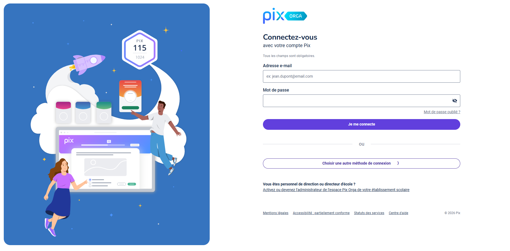
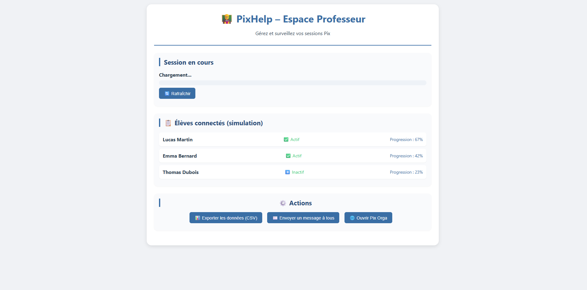
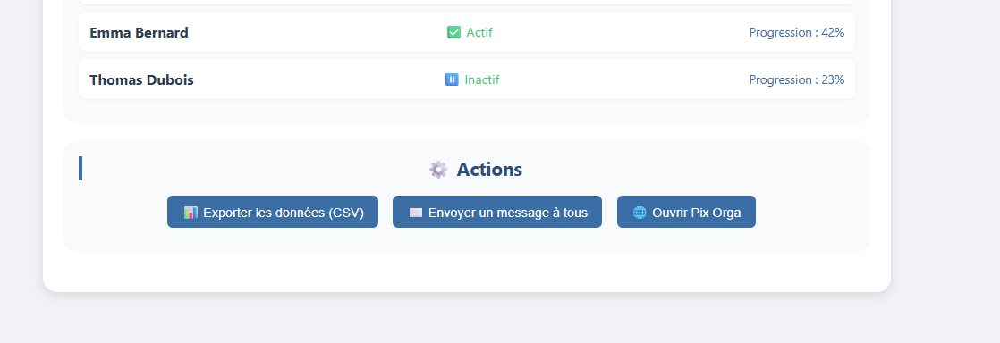

Quand vous êtes sur orga.pix.fr/dashboard, le popup de l’extension affiche un bouton "Tableau de bord prof". Un clic ouvre une interface dédiée.

Consultez la session active, la liste des élèves avec leur statut (actif/inactif) et leur progression. Exportez les données en CSV.

Envoyez un message à tous les élèves, ouvrez Pix Orga directement depuis le tableau de bord.
chrome://extensions/ → activez le mode développeur → "Charger l’extension non empaquetée" et sélectionnez le dossier.about:debugging → "Ce Firefox" → "Charger un module complémentaire temporaire" → choisissez le fichier manifest.json.https://orga.pix.fr/dashboard.